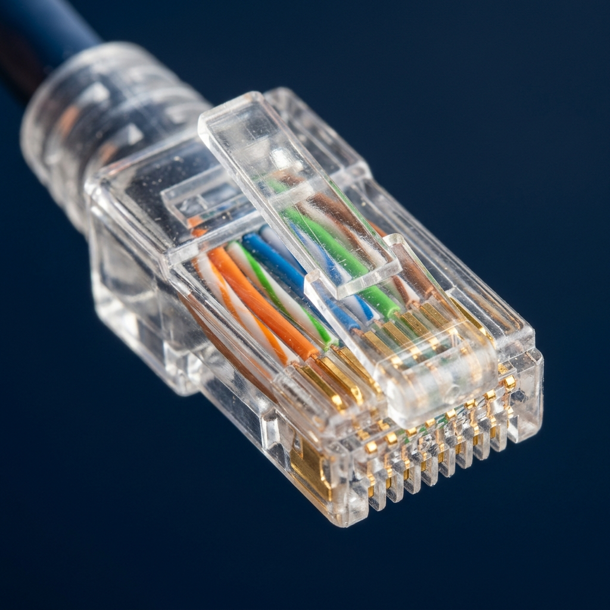
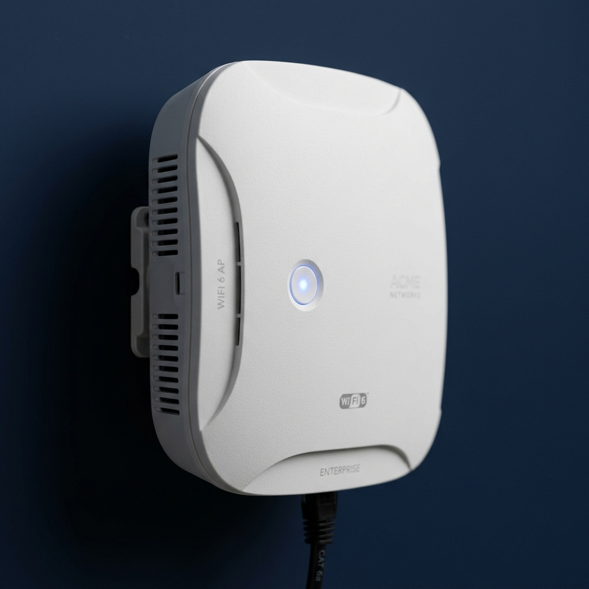
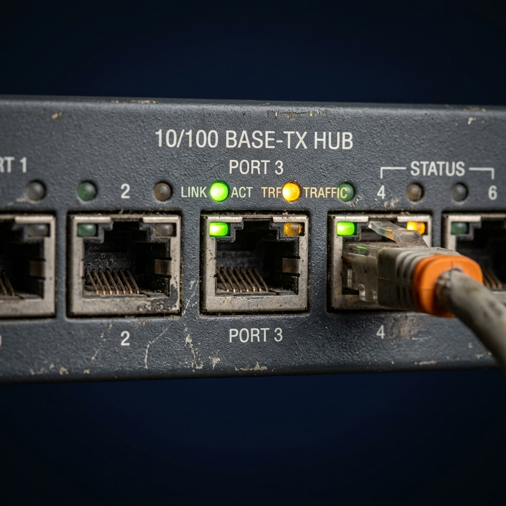

01. Úvod do Fyzické Vrstvy
Fyzická vrstva (Layer 1) tvoří nejnižší úroveň referenčního modelu OSI. Je plně zodpovědná za modulaci, kódování a přenos bitových signálů (logických nulek a jedniček) mezi aktivními síťovými prvky infrastruktury.
Specifikuje rozhraní ve čtyřech klíčových rovinách: elektrické, mechanické, procedurální a funkční.
02. Fyzická Média a Komponenty

Kroucená dvojlinka (UTP/STP)
Kabely zakončené typickými RJ-45 konektory. Tvoří kostru sítě Ethernet (Cat5e, Cat6). Zprostředkovávají elektrický signál přes měděná vlákna.
Optická Vlákna (Fiber)
Přenos dat světlem pomocí koncových čipů (lasery či LED). Extrémní šířka pásma a absolutní imunita vůči elektromagnetické indukci (EMI).

Wireless (Bezdrát)
Přenos modulací mikrovln (WLAN/Wi-Fi). Fyzické médium reprezentuje vakuový prostor/vzdušný kanál, který je jako sdílené médium silně náchylný na rušení.

L1 Přepínání (Huby)
Díky bohu zastaralá multiportová L1 zařízení (Repeater/Hub). Zesilují a hloupě replikují elektrický signál na všechny ostatní porty; vůbec neznají MAC adresy.
03. Signály a Způsob Kódování
Kódování linky (Line Encoding)
Způsob, kterým hardware přetváří nuly a jedničky na hmatatelný signál. Oblíbeným příkladem je Manchester Encoding, užívaný ve starším 10Base-T Ethernetu. Výhodou je zaručený přechod hrany (up/down) uprostřed každého hodinového taktu, což zajišťuje skvělou a spolehlivou synchronizaci odesílatele a přijímače.
Asynchronní vs Synchronní
Zatímco asynchronní přenos používá start a stop bity bez ucelených hodinových signálů (např. občasné uživatelské příkazy), synchronní přenosy (jako zobrazený Manchester) odesílají data s přesným a neustálým rytmem dodávaným hodinovým signálem pro masivní transport dat.
Výkonové Metriky sítě
- Bandwidth: Teoretické maximum linky.
- Throughput: Reálná datová propustnost linkou.
- Goodput: Exkluzivně uživatelská/aplikační data odečtená o všechny režijní hlavičky.
Latence a Degradace
Fyzická vrstva znatelně ovlivňuje stabilitu těchto fenoménů:
- Latence (Delay): Zpoždění signálu na trase (měřeno v ms). Obsahuje limitní čas serializace i limitní čas šíření světla.
- Jitter: Obávané odchylky v latenci mezi pakety. Silný Jitter naprosto likviduje použitelnost synchronních služeb (VoIP).
Útlum (Attenuation)
S rostoucí vzdáleností elektromagnetický signál přirozeně slábne a stává se nečitelným pro Layer 2:
- Měď (Copper): Elektrický odpor přeměňuje energii zčásti na teplo. Maximální dosah UTP je pevně dán normou na 100 metrů.
- Optika (Fiber): Fotony pohlcuje absorpce skla či ohyby vlákna. Tzv. budget optiky stačí až na stovky kilometrů!
04. UTP Kabeláž pod drobnohledem
Vlastnosti UTP (Unshielded Twisted-Pair)
UTP kabeláž se skládá ze čtyř párů barevně odlišených měděných drátů (obalených v plastu). Je sice ideálním standardem pro LAN, ale postrádá silné kovové stínění vůči elektromagnetickým rušením (EMI) a radiovým interferencím (RFI). Návrháři omezili tento negativní zásah (tzn. přeslech - crosstalk) tím, že se spolehli na dvě hlavní mechaniky:
1. Efekt zrušení polí (Cancellation)
Když inženýři spojí dva dráty v obvodu blízko sebe, jejich magnetická pole jsou přesně opačná. Tyto dvě pole se tak spolehlivě navzájem zruší a účinně odečtou také jakékoliv externí zachycené signály EMI/RFI.
2. Různý počet kroucení pletení
Ke zdokonalení izolačního efektu zrušení se liší i konkrétní počet kroucení na metr. Například oranžový pár je stočený méně krát než dráty modrého páru. Každý pár má zcela vlastní intenzitu zatočení.
Crossover vs. Straight-through
Různé situace vyžadují napojení drátů k odlišným pinům. Špatné zapojení sice zařízení neporuší, avšak komunikace prostě nevznikne – kontrola kabelů by proto měla být prvotním řešením problému (troubleshooting).
- Ethernet Straight-through (Přímý kabel): Nejběžnější případ kabelu pro spojování dvou odlišných vrstev technologií, tzn. např. připojení Hostite (Vrstvy 3-7) z počítače -> do Switche (Vrstva 2), potažmo ze Switche -> do Routeru.
- Ethernet Crossover (Křížený kabel): Kabel určen k pospojování stejných/podobných technologických zařízení v síti. Crossover spojoval např. Switch -> jiný Switch, případně napřímo propojení počítač -> počítač nebo Router -> Router.
Dnes se považuje za mírně zastaralý. Síťové porty se standardně vybavují interní technologií auto-MDIX, jež dokáže zjistit typ protějšího zařízení a provést zkřížení pinů automaticky procesorem na NIC kartě. - Rollover (Cisco exkluzivní): Specifický konfigurační kabel. Spojuje PC výhradně přímo do fyzického konzolového "Console portu" daného routeru nebo switche s cílem iniciální instalace.
T568A a T568B Standardy (Pinout schéma)
Standard T568A
- [██] Zelenobílý
- [██] Zelený
- [██] Oranžovobílý
- [██] Modrý
- [██] Modrobílý
- [██] Oranžový
- [██] Hnědobílý
- [██] Hnědý
Standard T568B
- [██] Oranžovobílý
- [██] Oranžový
- [██] Zelenobílý
- [██] Modrý
- [██] Modrobílý
- [██] Zelený
- [██] Hnědobílý
- [██] Hnědý
Poznámka: Straight-through (T568B->T568B nebo T568A->T568A) / Crossover (T568A->T568B).
05. Fyzické Topologie Sítí
Hvězda (Star)
Nejběžnější LAN topologie. Všechna koncová zařízení se připojují do centrálního uzlu (např. Switch). Snadná instalace a dobrá izolace poruch na linkách.
Částečný a Plný Mesh (Síť)
Zajišťuje vysokou dostupnost (High Availability). Každý uzel je fyzicky propojen s každým dalším (plný) nebo alespoň několika klíčovými (částečný). Extrémně nákladné, většinou nasazováno na L3 a výše.
Point-to-Point (Bod ke Bodu)
Přímé propojení dvou komunikačních uzlů. Využíváno převážně na WAN linkách nebo propojích mezi datovými centry bezprostředně sousedících routerů bez meziuzlů.
Sběrnice (Bus) a Kruh (Ring)
Starší topologie (např. 10Base-2 Coax, Token Ring). U sběrnice všechna zařízení sdílí na vrstvě L1 stejný kabel; v kruhu tvoří uzavřenou smyčku. Dnes velmi ojedinělé na úrovni běžných LAN.
06. Standardy a Organizace
Na rozdíl od vyšších vrstev TCP/IP (L3, L4 - IETF), je fyzická a linková vrstva převážně řízena hardwarovými a telekomunikačními inženýrskými organizacemi napříč světem.
IEEE
Institute of Electrical and Electronics Engineers. Nepochybně nejdůležitější úřad. Zastřešuje standardy jako 802.3 (Ethernet) a 802.11 (WLAN/Wi-Fi).
TIA/EIA
Telecommunications Industry Association. Definuje především normy pro samotnou kabeláž, kvalitu komponentů či konektory, např. hojně užívanou sadu TIA/EIA-568A a 568B.
ISO a ITU
ISO navrhlo referenční OSI model. ITU-T odpovídá za globální regulaci využití frekvencí a rádiového spektra přes národní úřady.
07. Certifikační Kvíz (CCNA Level)
Načítám prostředí testu...
Cisco Exkluzivity a Standardy
Nástroje a funkce integrované typicky v zařízeních rodiny Catalyst a Nexus na úrovni L1.